¿Qué es?
Es una extensión de Monte Sión que ofrece cuidado y actividades después del horario escolar, en un entorno seguro y acogedor.
Monte Sión After School
Un espacio para jugar, crear, explorar y compartir en un entorno cercano y acogedor.
Para niños y niñas de 3 a 6 años
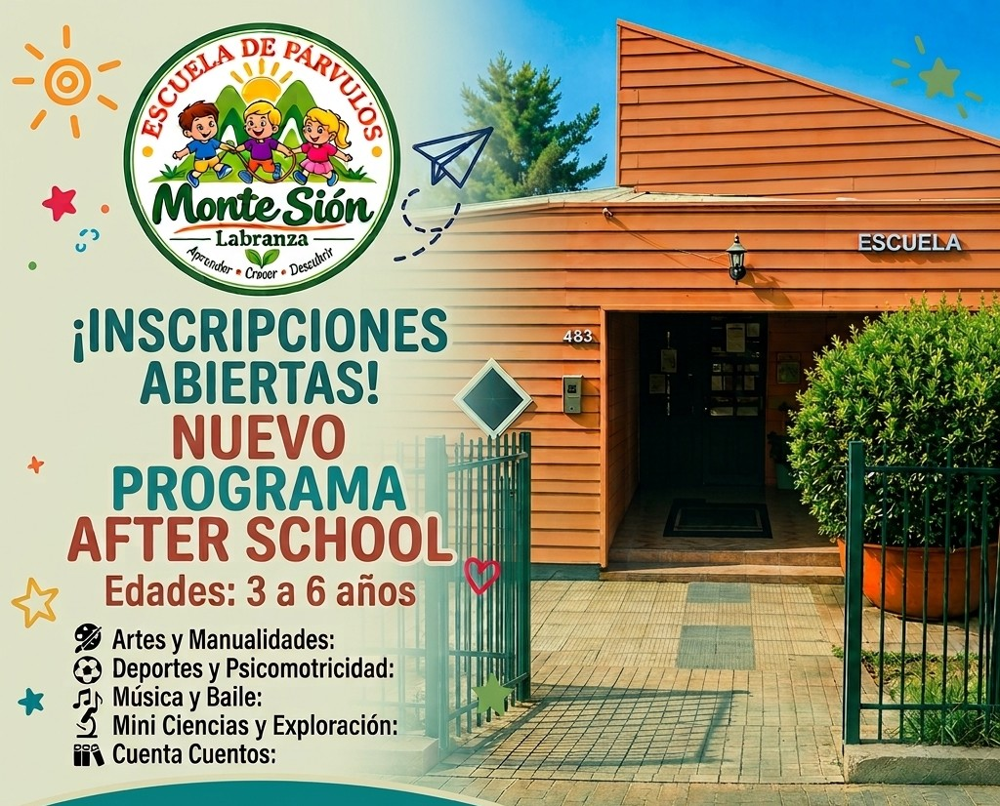
Un espacio pensado para que los niños continúen su jornada acompañados, en un ambiente cercano y lleno de experiencias.
Es una extensión de Monte Sión que ofrece cuidado y actividades después del horario escolar, en un entorno seguro y acogedor.
Para niños y niñas de 3 a 6 años que necesitan un espacio de acompañamiento, juego y aprendizaje después del colegio.
Talleres, juegos, exploración y momentos para compartir, siempre con la cercanía y confianza de Monte Sión.
Queremos que las familias sientan la misma confianza que les entrega Monte Sión, también después del colegio.
Los niños son acompañados por un equipo cercano que conoce la importancia de sentirse cuidados.
Espacios pensados para que se sientan cómodos, seguros y como en casa.
Comunicación directa y cercana con las familias, porque la confianza se construye en conjunto.
Propuestas pensadas para niños y niñas de 3 a 6 años, respetando sus ritmos e intereses.
Canales abiertos para resolver dudas y mantener informados a los apoderados.
* Los detalles específicos sobre protocolos, profesionales y certificaciones serán entregados directamente por el establecimiento.
Actividades pensadas para disfrutar, aprender y compartir.
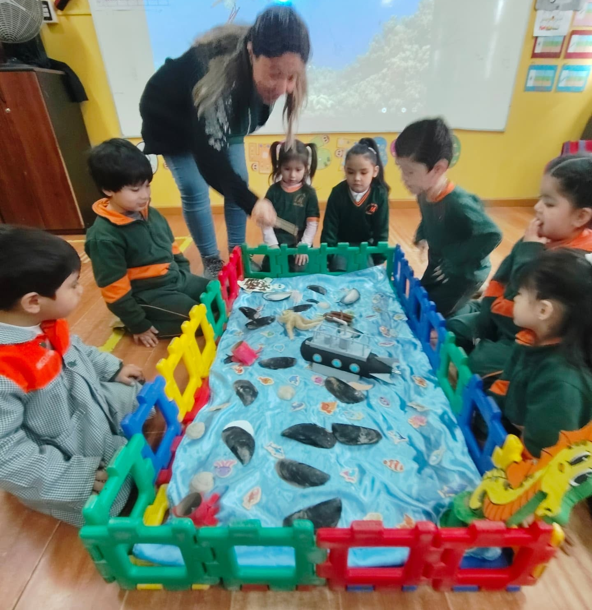
Manualidades, dibujo y expresión artística para despertar la imaginación.
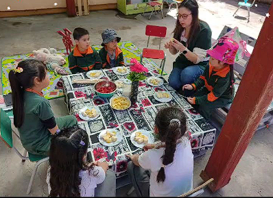
Juegos grupales y momentos de diversión compartida.
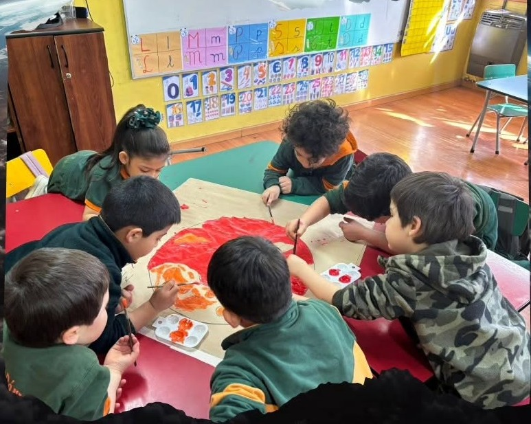
Actividades que refuerzan aprendizajes de forma entretenida.
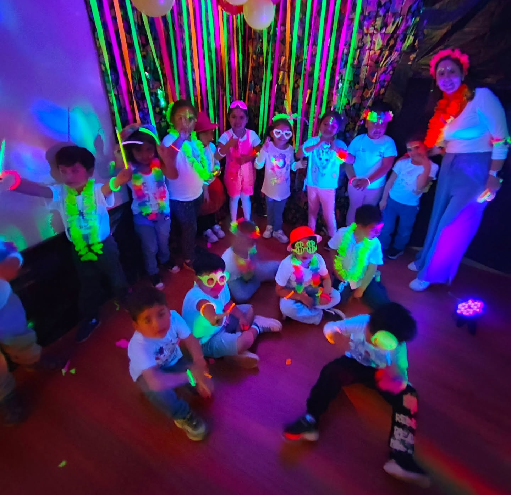
Movimiento, coordinación y energía para cerrar la tarde.
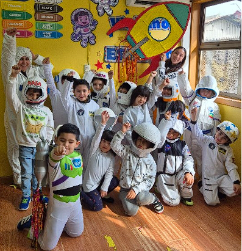
Descubrir, observar y aprender del entorno que nos rodea.
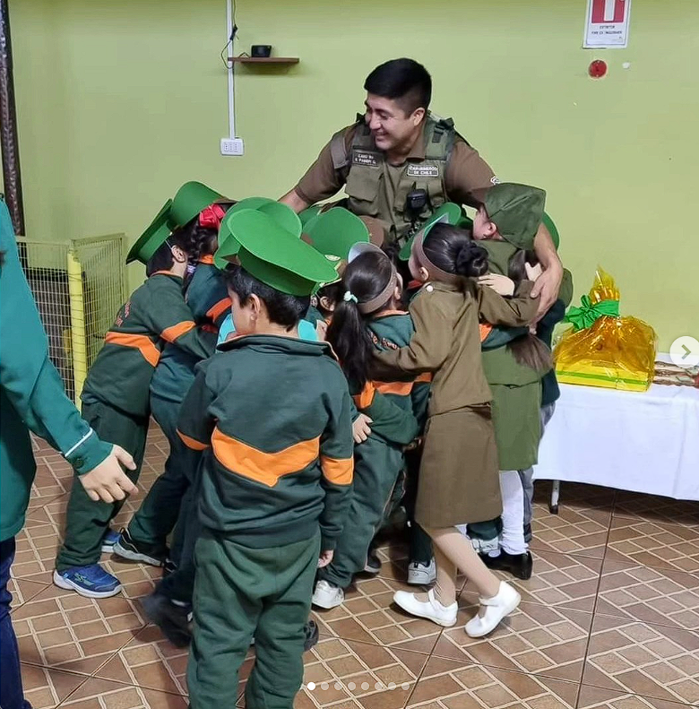
Momentos para convivir, colaborar y hacer nuevos amigos.
12:30 a 16:30 hrs
12:30 a 18:30 hrs
Un vistazo a las experiencias que se viven en el After School.
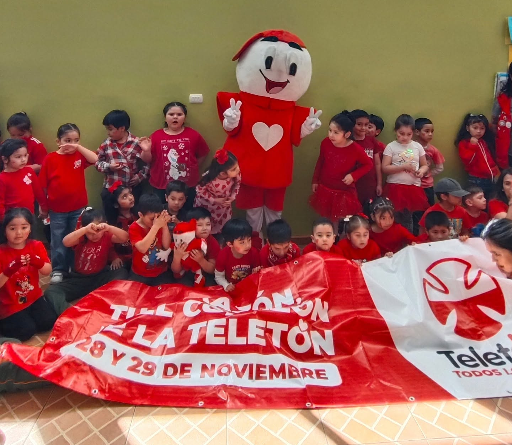
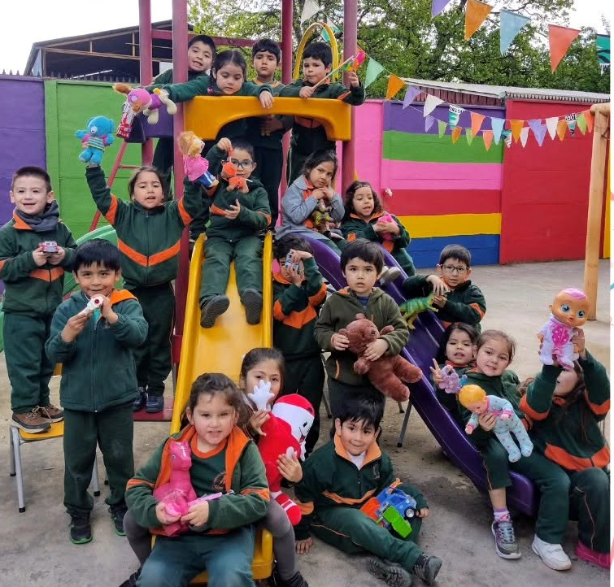
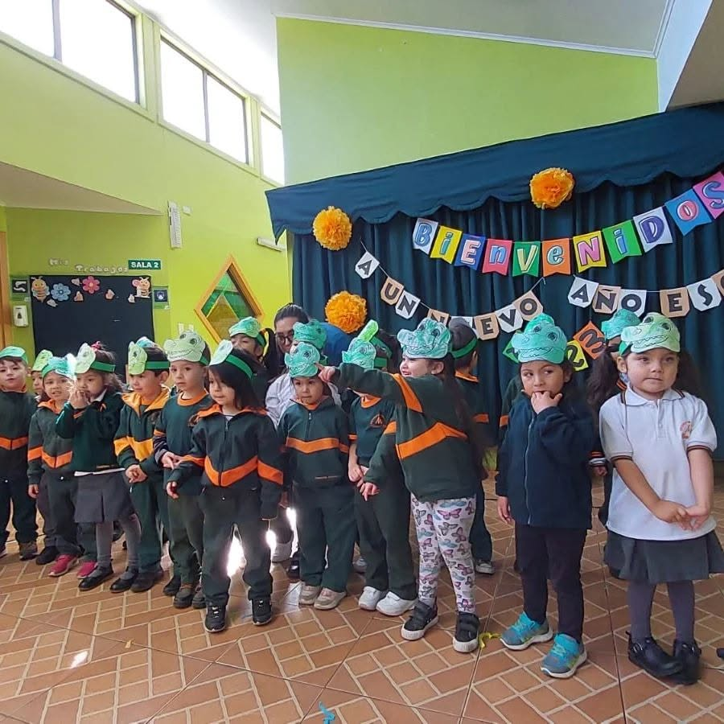
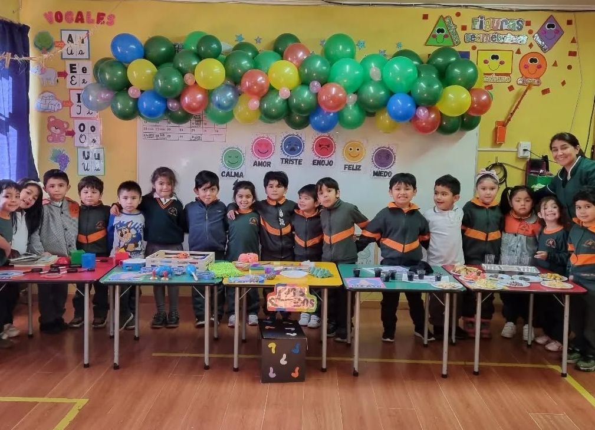
Testimonios reales de apoderados que confían en Monte Sión After School.
"Hermosas y especiales todas las tías son unicas"
"Exelente instituto, tias cariñosas con los niños y fomentan valores.."
"Un colegio excelente ojala algun dia se pueda ampliar y tenga enseñanza básica lejos sería el mejor ."
"Maravillosa actividad!!! 🤩Gracias por hacernos parte y poder disfrutar junto a nuestros niños 🥰❤️"
"Maravilloso lugar para la educación de nuestros hijos"
Extensión oficial de Monte Sión, con la misma identidad y confianza.
Ambiente cercano y acogedor para niños de 3 a 6 años.
Actividades pensadas para su edad y momento de desarrollo.
Comunicación directa con las familias.
Nos encontramos en Labranza, Temuco. Conversemos para coordinar una visita o resolver tus dudas.
Conversemos y te contamos todo lo que necesitas saber.